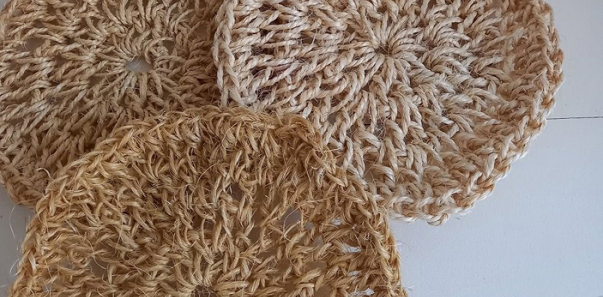

Instruments
Nous cherchons ces instruments pour compléter l'orchestre.
- Trombone
- Tuba
- Euphonium
- Baryton
- Ténor horn
- Trompette
- Cornet
 PROJET JINJA COMMUNITY MUSIC CENTER - FRANCE
PROJET JINJA COMMUNITY MUSIC CENTER - FRANCE
Jinja Community Music Center est un espace gratuit et sécurisé où les enfants peuvent apprendre, s’exprimer et grandir grâce à la musique.
Aujourd'hui, ils sont 27 musiciens mais il manque des instruments : c'est la raison de notre appel aux dons.
Nous cherchons ces instruments pour compléter l'orchestre.
Méthodes d'apprentissage, partitions de brass band, niveaux débutant → intermédiaire.
Les dons de méthodes ou de partitions peuvent être dématérialisés (fichiers PDF, liens de téléchargement légaux).
Pour faire vivre le lieu : fonctionnement, loyer, charges, nourriture pour les enfants, matériel pédagogique, organisation des activités.
Financier ou matériel (instruments / partitions).
En quelques secondes : on te répond avec les étapes suivantes.
Photos, nouvelles, avancées : transparence et suivi.
Deux façons d’aider : un don financier (le plus rapide) ou un don matériel (instruments / partitions).
Pour soutenir immédiatement le fonctionnement du lieu et l’achat d’instruments.
Propose un instrument ou des partitions : remplis le formulaire ci-dessous.
Les dons financiers sont transférés directement vers le compte de l'association. Nous utilisons des plateformes sécurisées pour les transferts internationaux vers l'Ouganda. Les fonds servent immédiatement au fonctionnement du centre, à l'achat d'instruments sur place, au loyer, aux charges et à la nourriture pour les enfants.
Après réception de ton formulaire, nous te recontactons pour organiser l'envoi. Pour les instruments, nous coordonnons l'expédition vers l'Ouganda (frais de transport à discuter selon le cas). Pour les partitions dématérialisées, nous t'enverrons un email avec les instructions pour le transfert des fichiers.
Les enfants du centre participent à des ateliers créatifs où ils fabriquent des objets en bois. En achetant ces créations, vous soutenez directement le centre et encouragez les enfants dans leur apprentissage.

Comment commander ? Rendez-vous sur notre boutique où vous pourrez voir les prix et sélectionner la quantité souhaitée. Le paiement se fait par virement bancaire directement sur le compte de l'association.
Plusieurs albums (placeholders pour l’instant). On branchera ensuite Cloudinary.
L'orchestre est souvent sollicité par des particuliers ou d'autres organisations pour animer des événements dans le village ou les villages environnants et promouvoir la musique. Certaines prestations génèrent des revenus qui servent à payer le loyer, à acheter de la nourriture pour les enfants se rendant au centre, ou encore à aider au paiement des frais de scolarité.
Les contacts se font uniquement via le site internet. Nous nous engageons à répondre sous une semaine maximum.
C'est cette personne qui répond à vos messages et questions via le formulaire de contact.
Nous remercions les donateurs. Si vous préférez, votre don peut apparaître comme « Anonyme ».